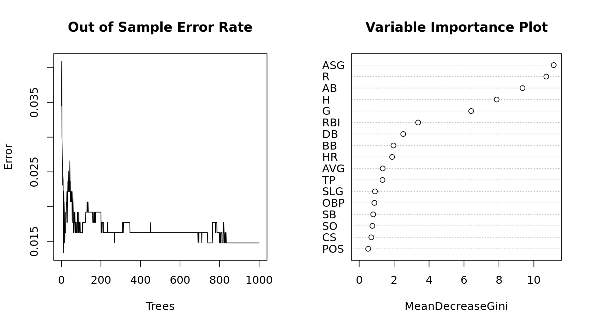
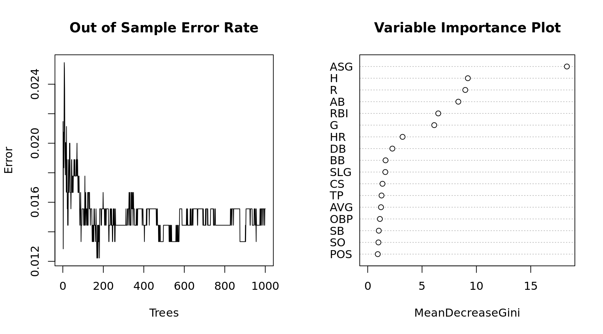

Random Forest
Background
The following dataset are career stats for over 1000 MLB baseball players. The data consists of the position of each player along with 19 numeric variables measure offense. The training set consists of 677 observations and the testing set has 339 observations. The objective is to build a model that will predict whether a player is in the Hall of Fame based on his career statistics. Since so few players make it to the Hall of Fame, the methodology for scoring the accuracy of models is based on the following calculation: \((sensitivity + 3*specificity) / 4\). The objective is to get as few incorrect predictions as possible, but having fewer false positives will affect the accuracy measure more than false negatives.
## required packages
library(randomForest)
## Training and Testing Data
hof.train = read.csv("data/HOF_tr.csv"); hof.test = read.csv("data/HOF_te.csv")
## remove unwanted columns
hof.train = hof.train[, -c(2:4)]; hof.test = hof.test[, -c(2:4)]
head(hof.train) HOF POS ASG G AB R H DB TP HR RBI SB CS BB SO AVG
1 Y OF 0.75 2440 9288 1383 3141 543 85 135 1138 319 125 790 434 338
2 Y SS 0.56 2601 10230 1335 2677 394 92 83 791 506 136 736 742 262
3 Y OF 0.83 1783 7244 1071 2304 414 57 207 1085 134 76 450 965 318
4 Y 1B 0.38 3026 11336 1627 3255 560 35 504 1917 110 43 1333 1516 287
5 Y 1B 0.95 2469 9315 1424 3053 445 112 92 1015 353 187 1018 1028 328
6 Y 1B 0.41 2124 7927 1131 2351 417 27 379 1365 142 80 588 1169 297
SLG OBP
1 459 388
2 343 311
3 477 360
4 476 359
5 429 393
6 499 350summary(hof.train) HOF POS ASG G AB
N:644 1B: 77 Min. :0.0000 Min. : 253 Min. : 559
Y: 33 2B: 83 1st Qu.:0.0000 1st Qu.: 924 1st Qu.: 2626
3B: 71 Median :0.0000 Median :1294 Median : 4101
C :122 Mean :0.1022 Mean :1336 Mean : 4323
OF:244 3rd Qu.:0.1500 3rd Qu.:1666 3rd Qu.: 5536
SS: 80 Max. :0.9500 Max. :3081 Max. :11551
R H DB TP
Min. : 37.0 Min. : 90 Min. : 14 Min. : 0.00
1st Qu.: 308.0 1st Qu.: 656 1st Qu.:109 1st Qu.: 12.00
Median : 522.0 Median :1064 Median :183 Median : 24.00
Mean : 574.9 Mean :1157 Mean :199 Mean : 30.19
3rd Qu.: 760.0 3rd Qu.:1502 3rd Qu.:260 3rd Qu.: 41.00
Max. :2295.0 Max. :3283 Max. :668 Max. :166.00
HR RBI SB CS
Min. : 1.0 Min. : 44.0 Min. : 0.00 Min. : 0.00
1st Qu.: 34.0 1st Qu.: 268.0 1st Qu.: 14.00 1st Qu.: 15.00
Median : 80.0 Median : 443.0 Median : 42.00 Median : 31.00
Mean :113.9 Mean : 538.1 Mean : 84.64 Mean : 42.07
3rd Qu.:155.0 3rd Qu.: 708.0 3rd Qu.: 98.00 3rd Qu.: 57.00
Max. :660.0 Max. :1917.0 Max. :1406.00 Max. :335.00
BB SO AVG SLG
Min. : 29 Min. : 71 Min. :161.0 Min. :222.0
1st Qu.: 221 1st Qu.: 362 1st Qu.:249.0 1st Qu.:350.0
Median : 364 Median : 565 Median :261.0 Median :392.0
Mean : 436 Mean : 643 Mean :261.5 Mean :392.7
3rd Qu.: 583 3rd Qu.: 842 3rd Qu.:273.0 3rd Qu.:433.0
Max. :2190 Max. :2597 Max. :338.0 Max. :557.0
OBP
Min. :203.0
1st Qu.:311.0
Median :328.0
Mean :328.8
3rd Qu.:347.0
Max. :415.0 ## Simple Random Forest
(mdl = randomForest(HOF ~ ., ntree = 1000, data = hof.train))
Call:
randomForest(formula = HOF ~ ., data = hof.train, ntree = 1000)
Type of random forest: classification
Number of trees: 1000
No. of variables tried at each split: 4
OOB estimate of error rate: 1.62%
Confusion matrix:
N Y class.error
N 640 4 0.00621118
Y 7 26 0.21212121## Function for testing accuracy
metric = function(confusion) {
sensitivity = confusion[4] / (confusion[2] + confusion[4])
specificity = confusion[1] / (confusion[1] + confusion[3])
score = (sensitivity + (3 * specificity)) / 4
return(score)
}
## Plot of the model performance
par(mfrow = c(1, 2))
plot(x = 1:1000, y = mdl$err.rate[,1], xlab = "Trees", ylab = "Error", type = "l",
main = "Out of Sample Error Rate")
varImpPlot(mdl, main = "Variable Importance Plot")
Testing Model Accuracy on New Data
Now that we have a trained model, we will apply the model to data that was not used in the training set. We will calculate the same accuracy score and compare the two. If they are wildly different we may have a problem with overfitting.
## predict the probability of HOF
estimate = data.frame(predict(mdl, hof.test, type = "prob"))
estimate$predict = predict(mdl, hof.test)
estimate$actual = hof.test$HOF
## Generate a confusion matrix
(confusion = table(estimate[, 3:4])) actual
predict N Y
N 321 2
Y 2 14## Final Accuracy Measure
(test.metric = metric(confusion))[1] 0.964106The random forest method is fairly robust to overfitting because it reserves some of the training data to use as test data which is called Out of Bag (OOB error). Because of this internal mechanism we could probably ues a larger portion of the overall data to train. The next sections tests this to see if accuracy is improved.
hof = rbind(hof.train, hof.test)
## create a training and testing set by randomly sampling from all of the data
set.seed(1002)
x = sample(nrow(hof), replace = FALSE)
## lets train the model on about 90% of the data
train = hof[x[1:900], ]
test = hof[-x[1:900], ]
## build the model
(mdl = randomForest(HOF ~ ., ntree = 1000, data = train))
Call:
randomForest(formula = HOF ~ ., data = train, ntree = 1000)
Type of random forest: classification
Number of trees: 1000
No. of variables tried at each split: 4
OOB estimate of error rate: 1.56%
Confusion matrix:
N Y class.error
N 858 3 0.003484321
Y 11 28 0.282051282## predict the probability of HOF
estimate = data.frame(predict(mdl, test, type = "prob"))
estimate$predict = predict(mdl, test)
estimate$actual = test$HOF
## confusion matrix
(confusion = table(estimate[, 3:4])) actual
predict N Y
N 106 2
Y 0 8(test.metric = metric(confusion))[1] 0.9861111## model plots
par(mfrow = c(1, 2))
plot(x = 1:1000, y = mdl$err.rate[,1], xlab = "Trees", ylab = "Error", type = "l",
main = "Out of Sample Error Rate")
varImpPlot(mdl, main = "Variable Importance Plot")
We get slightly better results from increasing the training set. The Random Forest model is predicting Yes to Hall of Fame if it measures the probability > .5. Since it is is so rare that a player gets voted to the Hall of Fame how accurate is the model if we lower the threshold? Based on a review of some of the false negatives I will make the minimum threshold for predicting yes .33
## predict the probability of HOF
estimate = data.frame(predict(mdl, test, type = "prob"))
estimate$predict = "N"
estimate$predict[which(estimate$Y > .33)] = "Y"
estimate$actual = test$HOF
## confusion matrix
(confusion = table(estimate[, 3:4])) actual
predict N Y
N 106 0
Y 0 10(test.metric = metric(confusion))[1] 1